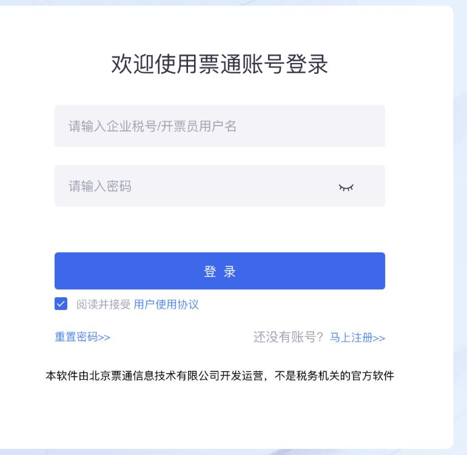
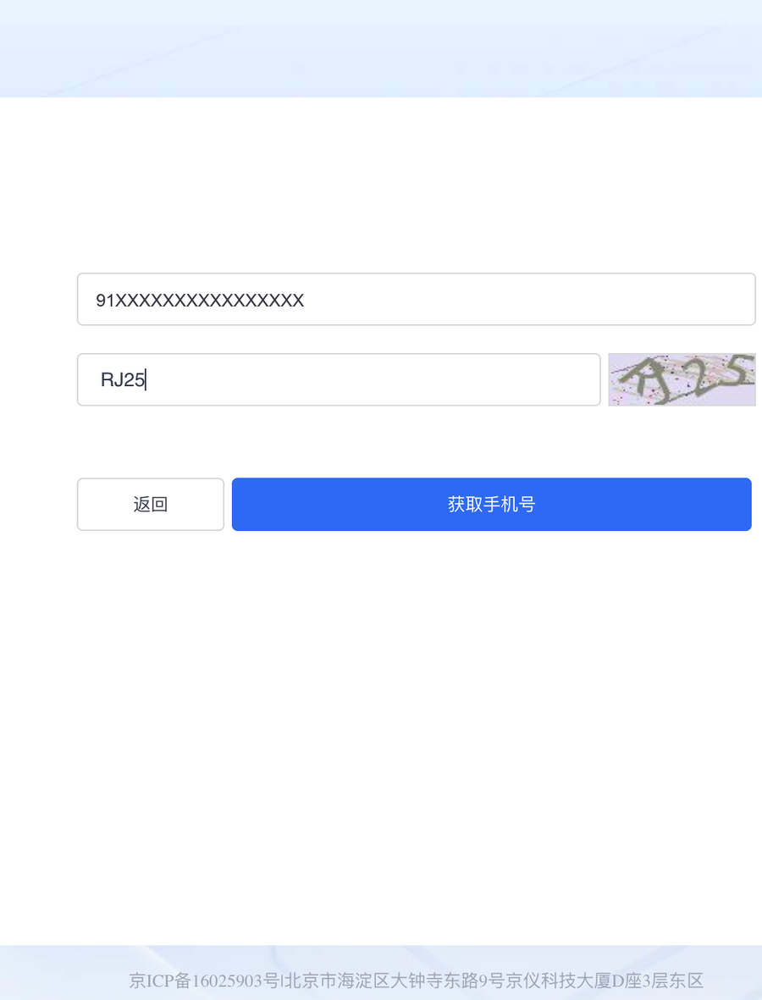
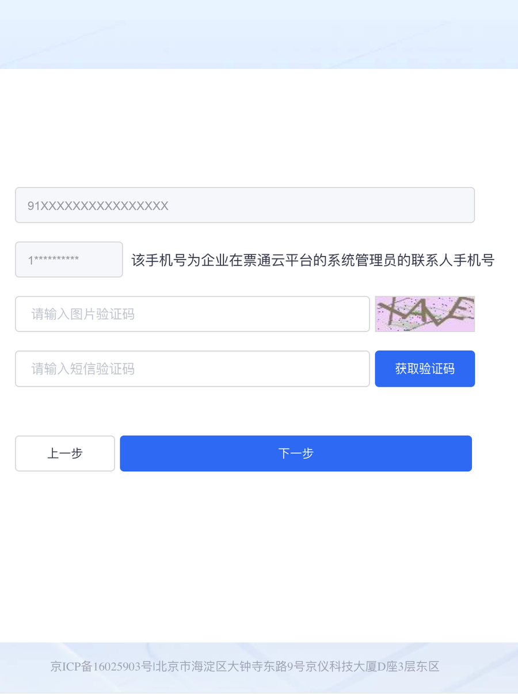
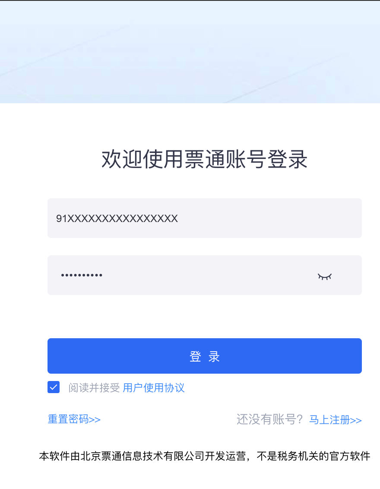
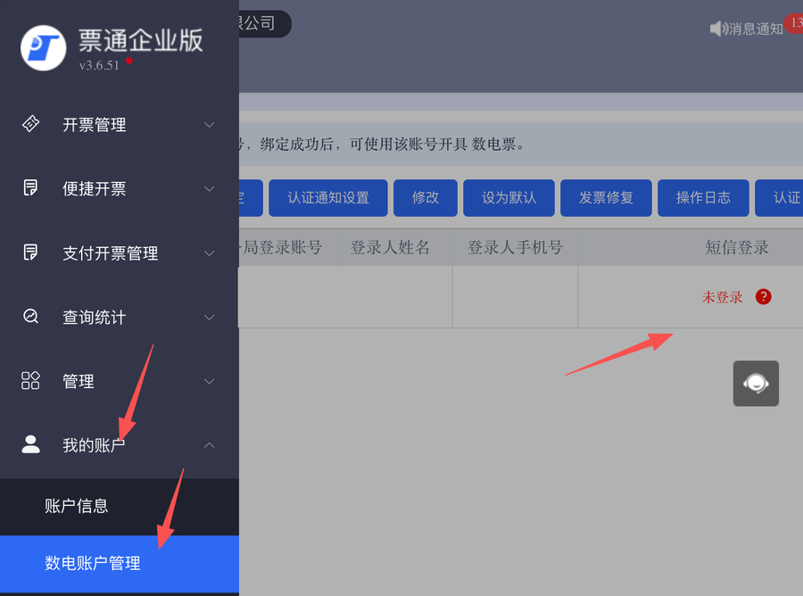
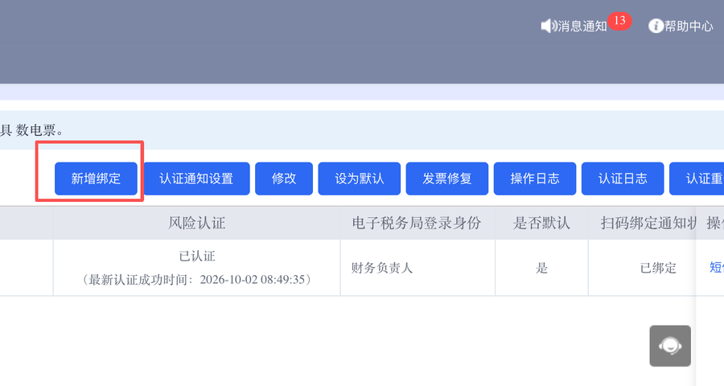
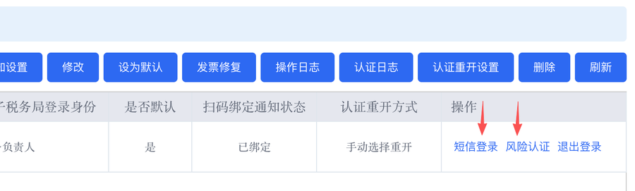
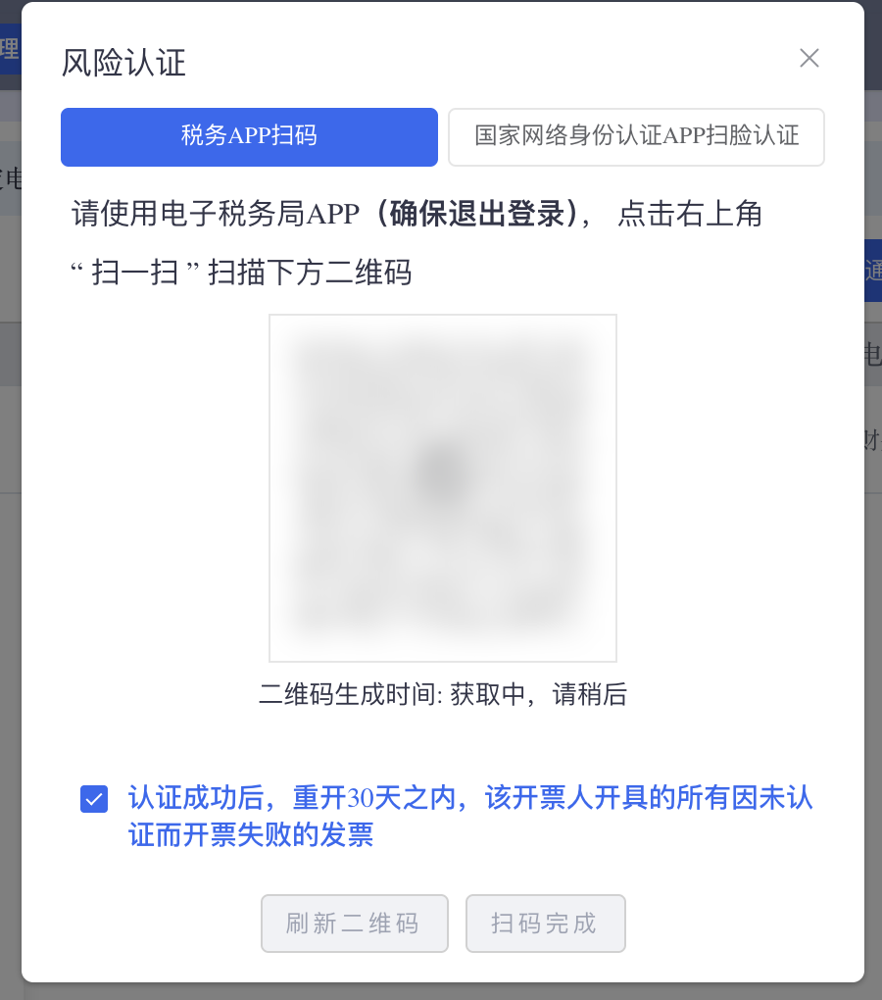

美菜官方手册 v1.1 整理
开票操作手册
内容依据美菜官方《旭峰开票系统卖家操作手册》v1.1 整理，如有更新以美菜最新文档为准
也可以用浏览器的“打印”功能把本页存为 PDF
打开注册页，在“提交工单”那一栏写清楚你的企业名称、纳税人识别号和遇到的情况，提交后由人工处理并在同一个页面回复你；留了邮箱的，也会再发一封邮件。不用在手册里到处找联系方式，也不用反复重试。
首次使用：三步缺一不可
菜单都在美菜卖家后台「发票管理」下，依次完成：
- 旭峰注册：输入企业税号（须与营业执照统一社会信用代码完全一致，含大小写、空格）→ 打开旭峰注册页 → 按指引完成注册。2026 年 12 月 31 日前是免费期，不经过收银台、不用付款。一个税号只需注册一次。
- 数电账号登记：填写企业在电子税务局开立的数电账号。注意：数电账号不是税号——税号是统一社会信用代码（全国唯一），数电账号是电子税务局里办数电发票业务的登录账号；一个税号下可有多个数电账号，登记一个常用的即可。
- 旭峰登录认证：填企业税号+数电账号 → 获取短信验证码（若提示"无需验证码"可跳过）→ 短信登录 → 查询认证状态确认结果。
认证状态速查表：
| 状态 | 含义 | 处理 |
|---|---|---|
| 无需认证 | 当前账号无需登录认证 | 可直接开票 |
| 已登录 | 已通过登录认证 | 可直接开票 |
| 需短信认证 | 上一次的认证已经到期了，账号本身没问题 | 回到“旭峰登录认证”，用手机收到的短信验证码重新认证一次 |
| 需扫码认证 | 需扫码完成认证 | 按页面提示扫码 |
提示：登录认证有有效期，过期需重新认证；每次开票/红冲前系统会自动校验，未认证会拒绝开票。建议开票前先确认状态为"已登录"或"无需认证"。
刷脸认证多久做一次：间隔不固定，由企业自己设置：可在 0 天到 183 天之间选，填 0 表示每开一张发票都要刷脸。最长能设多久因企业而异，税务系统会按企业的纳税信用、发票额度等情况评估：有的企业最长 183 天，有的最长 90 天，也有的按小时计算（如 24 小时），以电子税务局设置页面显示的为准。最稳妥的做法：用数电账号登录电子税务局，手动开票时做一次刷脸认证：开票前电子税务局会自动弹出认证二维码，用税务 App 扫码完成即可。认证通过后，认证状态会保持企业设置的认证时长。只有法定代表人或财务负责人能改，开票员、办税员改不了：用他们的身份登录电子税务局，依次点“我要办税”→“发票使用”→“蓝字发票开具”，在发票额度下方或“发票填开”旁边点“扫脸认证时长设置”（有的地区叫“身份认证频次设置”），在页面显示的最长时间以内选择；想少刷几次，就设成页面允许的最长时间。另外，开票时如果触发税务风险提醒，即使还没到设置的间隔，也可能要求重新刷脸，以开票平台提示为准。
开票失败时：到旭峰微票通开票平台补做认证（平时不用登录）
平时不需要登录这个平台。只要你的数电账号在电子税务局的认证状态有效（按企业设置的刷脸间隔做过认证），美菜推送的发票就会正常开出，不会因为认证开票失败，也就不需要重置密码、登录、绑定、认证、重开发票这一整套操作。
开通后，我们会给你注册时填写的联系人手机号发一条开通短信，只发一次，用来告诉你开票平台的登录账号和第一次登录的方法，方便以后开票失败时补做认证，或者自己用这个平台开票。短信内容是：「【北京旭峰嘉晟科技有限公司】（你的企业名称）的开票服务已开通。请登录票通电子发票服务平台，账号是企业税号；首次登录请点“重置密码”，按提示用预留手机号接收验证码设置密码，登录后再按提示完成风险认证。操作指引见美菜卖家后台“发票管理-旭峰注册”页面。」收到这条短信不代表要马上登录：平时不用登录，开票失败时再按下面的步骤操作。
用得到它的情况有两种：
- 美菜那边出现开票失败，原因是风险认证（刷脸）过期，或者数电账号还没在电子税务局完成认证：在这个平台补做认证，并把失败的发票重开。
- 你想用一个方便的开票平台自己开票。
网址（请用电脑浏览器打开）：登录页 https://fpkj.vpiaotong.com/login；第一次使用先设置密码：https://fpkj.vpiaotong.com/resetpwd。登录页标题显示为“票通电子发票服务平台”，就是这个平台。登录账号是企业税号，不是手机号。
- 打开登录页，点左下角“重置密码>>”。

登录页左下角的“重置密码>>” - 填企业税号和图片验证码，点“获取手机号”。

重置密码第一步 - 页面会显示这个账号的预留手机号。再填一次图片验证码，点“获取验证码”，把收到的短信验证码填进去，点“下一步”。

重置密码第二步 - 设置新密码（8~20 位，要同时带大写字母、小写字母和数字），完成后回到登录页。
- 用企业税号和新密码登录。

用企业税号和新密码登录 - 左侧点“我的账户”→“数电账户管理”。

“我的账户”→“数电账户管理” - 点“新增绑定”，用和美菜上相同的数电账号绑定。美菜后台里的绑定不会同步到这里，要在这里再绑一次。

“新增绑定”；绑定并认证后，“风险认证”一栏会显示“已认证”和最新认证时间 - 先做短信登录：在“操作”一栏点“短信登录”，按提示输入短信验证码，完成登录认证。

先点“短信登录”，完成登录认证后再做风险认证 - 再做风险认证（必须在短信登录之后）：点“风险认证”，按弹窗提示用电子税务局 App（弹窗写着“确保退出登录”）点右上角“扫一扫”扫码，或者选“国家网络身份认证APP扫脸认证”，按提示刷脸，最后点“扫码完成”。弹窗下方勾选“认证成功后，重开30天之内，该开票人开具的所有因未认证而开票失败的发票”，认证成功后，这 30 天内因为没认证而开票失败的发票会重新开出。

风险认证弹窗：完成认证，并勾选重开 30 天内因未认证而开票失败的发票 - 回到“数电账户管理”，“风险认证”一栏显示“已认证”和最新认证时间，就完成了。
这里设置的只是登录开票平台用的密码；美菜后台里那一步“旭峰登录认证”不用重做，也不会受影响。以后忘了密码，同样用“重置密码”自己找回；预留手机号收不到验证码的，在注册页提交工单。
开具发票
- 自销开票（给自己下的订单开票）：发票申请 → 选申请单 → 旭峰开票 → 填数电账号（必填）→ 核对发票类型、金额、明细 → 确认开票 → 提交后系统排队出票，通常 1~5 分钟。提交完不用守在页面上，过几分钟回发票列表刷新看状态就行，也不要重复提交
- 代销开票（美菜代销订单回票）：代销回票管理 → 选回票申请单 → 旭峰开票 → 填数电账号 → 提交。销方为卖家企业、购方为美菜；申请单金额必须大于 0
- 开票状态：开票中（处理中）/ 已开票（可下载 PDF）/ 开票失败（按原因处理）
- 发票商品名前的 蔬菜 谷物 等前缀是税收分类编码税目大类，系统自动匹配，数电发票规范要求；与实际品类不符时联系美菜运营核对商品税编
开票失败怎么办（错误速查）
下表第一列就是你屏幕上会看到的原话。有些提示后面还跟着一串数字，那是系统内部编号，你不用记也不用查，照着文字对号入座就行；联系我们的时候，把整句提示截个图发来最快。
| 提示 | 原因 | 处理 |
|---|---|---|
| 旭峰数电账号不能为空 | 未填数电账号 | 在开票弹窗填写 |
| 请到【旭峰数电账号登录认证】进行登录认证 | 认证过期或未认证 | 到"旭峰登录认证"重新认证 |
| 开票终端已到期 | 旭峰那边的开票服务用到期了，不是你的税号或资料有问题 | 联系美菜业务人员，由美菜去办续期；你自己不用去旭峰后台操作。办好后回来把这张票重新开一次 |
| 账号绑定失效 | 你的企业账号和旭峰之间的绑定关系断了，注册资格还在 | 联系美菜业务人员恢复绑定，不用重新注册、也不用再付一次钱。恢复后重新提交开票 |
| 税额精度超限 | 这笔单的金额乘税率算出来的税额，和税务系统认可的数字差了 0.06 元以上，常见于金额特别小的单子 | 先核对这笔流水的金额有没有填错；几毛几分的小额单子尽量并到正常金额的单子里再开。金额确认没问题还是同样提示，联系美菜业务人员 |
发票红冲（作废重开）
发票列表 → 选原发票（状态须为"已开票"）→ 红冲 → 填数电账号（须与原蓝票一致）→ 选红冲原因（默认全额红冲）→ 提交，状态"红冲中"→"已红冲"。
注意：红冲不可逆；红冲成功原发票作废并生成等额红字发票；只有旭峰开的发票走旭峰红冲（百望开的走百望入口）；红冲前确认登录认证有效。
发票文件下载
开票成功后，系统会自动把发票文件取回美菜后台，通常 5~10 分钟内发票列表里就会出现下载按钮。取回来的有两份：一份是可以打印、发给客户的发票文件，一份是给财务做账、报税用的数据文件。超过 30 分钟还没出现，联系美菜业务人员帮你查。红字发票同样可以下载。
每次开票前检查清单
| 企业税号已完成"旭峰注册" |
| 数电账号已完成"数电账号登记" |
| "旭峰登录认证"状态为"已登录"或"无需认证" |
| 开票申请单金额大于 0 |
| 开票弹窗"数电账号"已填写 |
常见问题精选
| 旭峰开票和百望开票什么区别？ | 并行通道二选一，能力一致。旭峰开的是数电发票（国家税务总局推行的全电发票新票种），百望开的是电子发票。 |
|---|---|
| 一直提示要登录认证？ | 认证过期了，到"旭峰登录认证"重新短信登录，状态变"已登录"再开票。 |
| 红冲后原发票还能用吗？ | 不能，已作废且不可恢复，以生成的红字发票为准。 |
| 旭峰开票收费吗？ | 免费期截止到 2026 年 12 月 31 日；2027 年 3 月 1 日前需缴费，避免停止服务。免费期内注册开通全程免费，不经过收银台、不收任何费用；2027 年 1 月 1 日至 2 月 28 日服务照常，同时开放缴费。3 月 1 日前缴费，一年期 799 元/年/税号、两年套餐 1500 元/税号；3 月 1 日起按原价。美菜不额外收开票服务费，本服务不设自动扣费。 |
遇到问题找谁
| 问题类型 | 找谁 |
|---|---|
| 资质维护、税号问题 | 美菜业务人员 |
| 开票失败、红冲失败 | 美菜业务人员 → 美菜技术 |
| 提示“开票终端已到期”“账号绑定失效”这类旭峰那边的问题 | 先找美菜业务人员，由美菜转旭峰客服处理，你不用自己去联系旭峰 |
| 商品税编问题 | 美菜运营 |
| 注册、开通阶段的问题 | 在注册页提交工单，人工处理后在同一个页面回复你 |